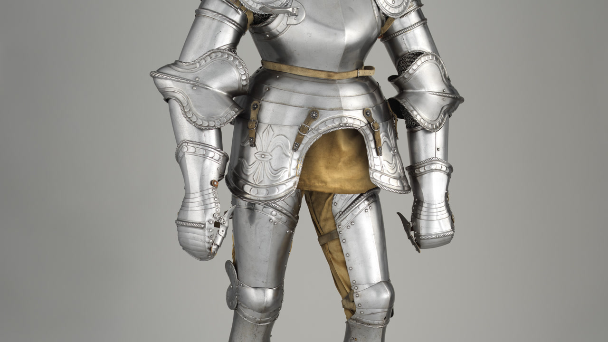

VANGUARD / SECTOR 07
No cruces la línea.
HUD diegético para una misión de extracción. Estado, objetivo y amenaza visibles en menos de un parpadeo.
84integridad
12munición
03objetivos
A-07sector
OBJETIVO NÚCLEO / A-07
AMENAZA PATRULLA DE ASALTO
RUTA MUELLE / 03